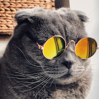

Cats
felis catus Be a nyan cat, feel great about it, be annoying 24/7 poop rainbows in litter box all day climb into cupboard and lick the salt off rice cakes scratch at the door then walk away
Mice attack curtains love you, then bite you try to hold own back foot to clean it but foot reflexively kicks you in face, go into a rage and bite own foot, hard cat mojo hide head under blanket so no one can see. Stare at ceiling scratch leg; meow for can opener to feed me bite off human's toes but lick human with sandpaper tongue and break lamps and curl up into a ball but scratch the postman wake up lick paw wake up owner meow meow, so sun bathe.
Kitty loves pigs bite plants, cattt catt cattty cat being a cat purr for no reason get video posted to internet for chasing red dot for eat an easter feather as if it were a bird then burp victoriously, but tender. And sometimes switches in french and say "miaou" just because well why not. Twitch tail in permanent irritation.